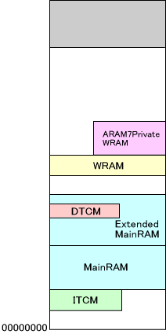
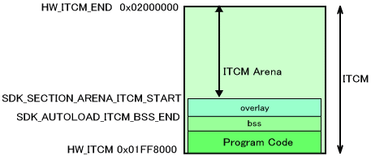
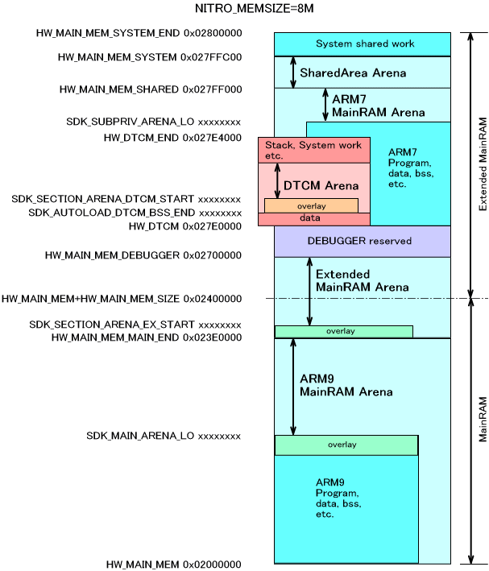
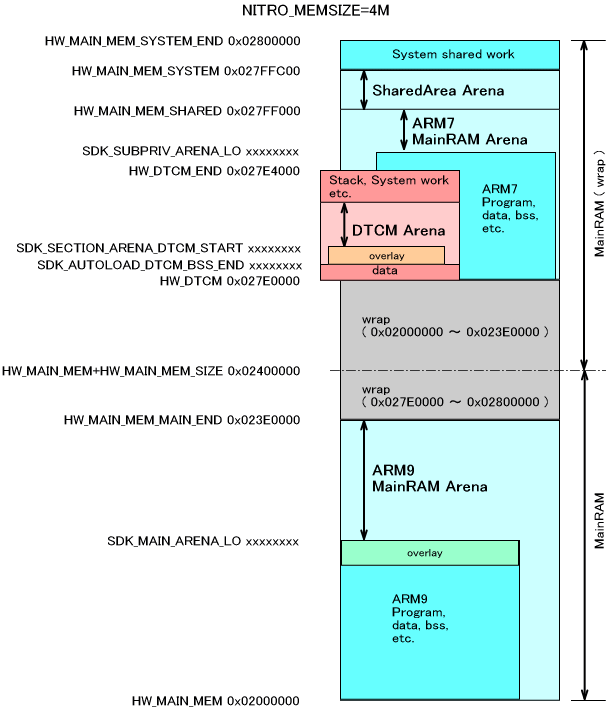
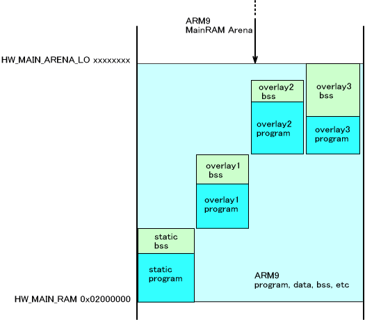
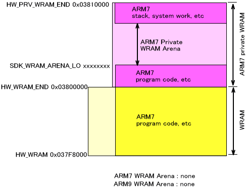
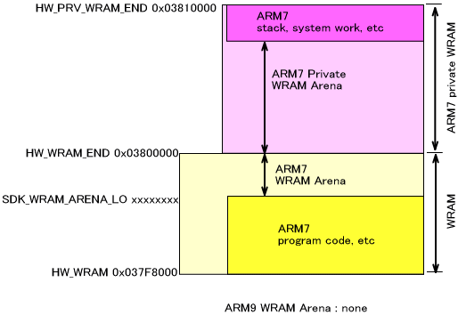
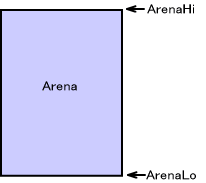
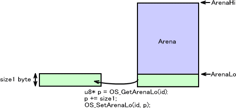

NitroSDK では、メインメモリ(ARM9用、ARM7用)、メインメモリ拡張部分、ITCM、DTCM、共有メモリユーザ部分、共用ワークRAM(ARM9用、ARM7用)、ARM7専用ワークRAM
の9つのアリーナ領域を設定することが出来ます。それぞれの領域にはIDが振られており、OSArenaId
列挙型で以下のように定義されています。
| OS_ARENA_MAIN | メインメモリ上のアリーナ(ARM9専用) |
| OS_ARENA_MAIN_SUBPRIV | メインメモリ上のアリーナ(ARM7専用) |
| OS_ARENA_MAINEX | メインメモリ上の拡張アリーナ |
| OS_ARENA_ITCM | ICTM上のアリーナ |
| OS_ARENA_DTCM | DTCM上のアリーナ |
| OS_ARENA_SHARED | 共有メモリ上のユーザ領域のアリーナ |
| OS_ARENA_WRAM_MAIN | 共有ワークRAM上のアリーナ(ARM9用) |
| OS_ARENA_WRAM_SUB | 共有ワークRAM上のアリーナ(ARM7用) |
| OS_ARENA_WRAM_SUBPRIV | ARM7専用ワークRAM上のアリーナ |
これらは OS_InitArena() で初期化されます。ARM7専用のメインメモリ上のアリーナと、ARM7用共有ワークRAM上アリーナと、ARM7専用ワークRAMアリーナを
ARM7 が、残りを ARM9 が設定します。以下、開発時の標準的なメモリマップで説明します。

ITCM上のアリーナ
ITCM部分について説明します。
ITCMの下位部分にSDKのプログラムコードが格納されています。次にユーザが設定していればオーバレイモジュールが配置されます。オーバレイで使用する最大のアドレスを考慮し、それ以降を ITCM アリーナとします。オーバレイが無い場合は、SDK_AUTOLOAD_ITCM_BSS_END からが ITCM アリーナとなります。
この ITCM アリーナの始まるアドレスは、SDK_SECTION_ARENA_ITCM_START として lcf ファイルで自動的に決定されます。
ITCMに配置されるコードは、割り込みハンドラとDMA関数の一部です。この部分はautoload 機能によってNitroMain() が始まる前にITCMに転送されます。転送される部分はユーザが追加で指定することも可能です。

メインメモリ、拡張メインメモリ、DTCM、共有領域上のアリーナ
メインメモリ、拡張メインメモリ、DTCM、共有領域のアリーナについて説明します。
OS_EnalbeMainExArena関数によってメインメモリのサイズ設定が8MByteになっている場合には、メインメモリ上の拡張アリーナを使用することができますが、OS_DisableMainExArena関数によってメインメモリのサイズ設定が4MByteになっている場合や実機で動作させる場合にはメインメモリ上の拡張アリーナは使用できません。 ( これらのメインメモリ拡張アリーナの使用/不使用を宣言する関数はOS_Init関数やOS_InitArena関数よりも前に呼び出す必要があります。)
下の２つの図は、メインメモリサイズが 8MByte に設定されている場合と、4MByte に設定されている場合を説明したものです。この中の、SDK_ で始まるシンボルは lcf ファイルで自動的に決定されます。
DTCMの下位アドレスには、割り込み処理で使用するデータ領域が確保されます。ユーザが追加で領域を確保することも可能です。ただし、DTCMにはプログラムコードは配置できません。 ITCM と同様に、オーバーレイモジュールを配置した場合、それを考慮して DTCM アリーナの開始アドレス SDK_SECTION_ARENA_DTCM_START が決定されます。オーバーレイが無い場合、SDK_AUTOLOAD_DTCM_BSS_END と同値になります。
HW_MAIN_ARENA_LO については後述します。


SDK_MAIN_ARENA_LO は、メインメモリのスタティック部分と、overlayでロードされるプログラムやそのoverlay部分のBSS領域のもっとも後ろの位置になります。 ITCM や DTCM や 拡張メインメモリの overlay と同様です。

ワークRAM上のアリーナ
ワークRAMは標準では全てARM7に割り当てられていますので、アリーナもARM7で使用することを想定しています。
共用ワークRAM、ARM7専用ワークRAMは連続領域に割り当てられます。従って、ここに格納されるプログラムコードなどの大きさによってワークRAMアリーナが確保できるかどうかが変わってきます。
以下は格納するプログラムが大きくなりARM7専用ワークRAMまで入っている場合と、共有ワークRAMで収まった例です。どちらも共用ワークRAM上のアリーナは ARM9側に存在しません。プログラムがARM7専用ワークARMまで入っている場合は、ARM7の共用ワークRAM上のアリーナは存在しません。


アリーナの管理とメモリ確保
アリーナ領域は、その先頭と末尾のポインタを示すことで存在しています。

システムではこの２つのポインタと、アリーナが初期化されているかどうかの情報しか保持していません。つまりアリーナがどれだけ使用されているか、初期のポインタ位置がどこであったか、アリーナの中身がどうなっているか、といった情報はありません。
アリーナ領域の先頭と末尾ポインタ、そして初期化されているかの情報はそれぞれのアリーナにあり、まとめてシステム共有領域に置かれています。
アリーナからメモリブロックを確保するときは、領域の先頭からか、末尾からのいずれからのみ確保することが出来ます。メモリ領域の境界は自分で移動することになります。例えば領域の先頭(下位)から size1 バイト確保するときは、OS_GetArenaLo()を呼んだ後、返り値を境界に設定するためにOS_SetArenaLo()を呼びます。

ここから領域の末尾(上位)から size2 バイト確保すると以下のようになります。
なお、これら一連の作業を自動で行い、領域の先頭(下位)及び末尾(上位)から領域を確保することができるOS_AllocFromArenaLo()、OS_AllocFromArenaHi()が存在します。
アリーナを利用する際には、こちらの関数を使用することを推奨します。
このように、アリーナはゲーム中に頻繁にメモリを確保したり開放したりする用途には向いていません。多くは、初期化時に目的別に一括して領域を確保するといった大局的な割り当てのために使用されます。ゲーム中に確保や開放を繰り返すためには OS にOS_AllocFromHeap()といったメモリ割り当てシステムが用意されていますので、そちらを参照してください。
2006/03/16 アリーナの管理とメモリ確保の図の修正、及び説明の追加
2005/08/27 ITCM, DTCM, 拡張メインメモリアリーナの overlay 対応に伴う修正
2005/07/28 ミスの修正
2005/04/15 メインメモリ、DTCM上のアリーナの位置を変更
2004/12/13 用語や語尾など修正
2004/10/25 初版。OS_InitArena() から独立